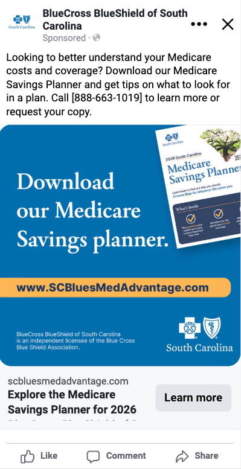
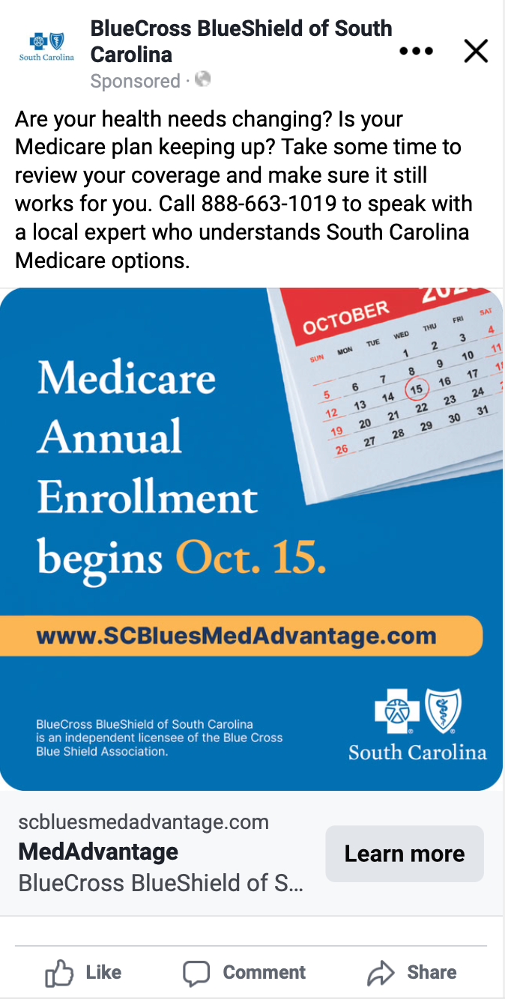
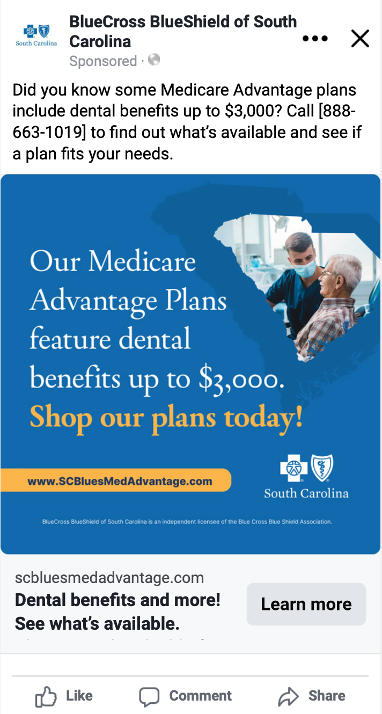
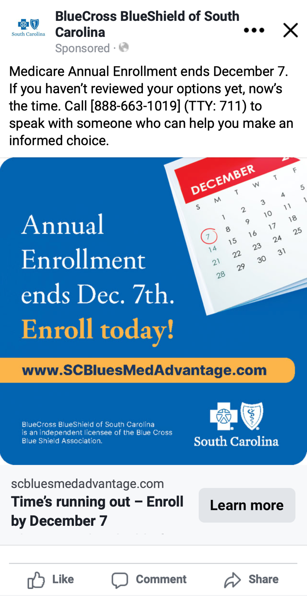

Pre-AEP
Give people a place to begin.
The Medicare Savings Planner offered a starting point for understanding costs and coverage. The message invited people to prepare for a plan decision and made local assistance available.

Case study / Medicare Advantage / Paid social
I led a nine-week Meta campaign focused on priority counties in South Carolina. The campaign generated 236,729 link clicks and contributed to a record selling year, when digital self-enrollment outperformed traditional phone channels for the first time.
Explore the four campaign phases ↓Choosing Medicare coverage is a consequential decision. The campaign needed to bring the offering into view, make the next step clear, and keep the enrollment deadline visible.
I led the paid social campaign with geographic targeting focused on priority counties within South Carolina. That focus connected the campaign’s distribution to the areas the business had prioritized.
The campaign paired that geographic focus with phased messaging, giving the audience planning resources, reasons to review coverage, specific benefits to consider, and a reminder to act before the deadline.
The campaign recorded the following Meta delivery and interaction results over nine weeks:
| Reported metric | Result |
|---|---|
| Reach | 1,643,887 |
| Impressions | 49,151,985 |
| Link clicks | 236,729 |
Link clicks measure interactions with ad links; they are not a count of unique website visitors or completed enrollments.
The campaign contributed to a record Medicare Advantage selling year. During that selling year, digital self-enrollment outperformed traditional phone channels for the first time.
The enrollment-channel result describes the wider selling effort; the Meta figures show this campaign’s delivery and response.
Selected campaign creative
The examples move from preparation and plan review to benefit consideration and the enrollment deadline. Each phase gave people a different reason to explore their options while maintaining a consistent BlueCross presence.
Selected creative for 2026 coverage from the 2025 campaign. The results above cover the full nine-week effort.
Pre-AEP
The Medicare Savings Planner offered a starting point for understanding costs and coverage. The message invited people to prepare for a plan decision and made local assistance available.

Preheat
The upcoming enrollment period gave people a reason to review their current plan. This example connected the calendar reminder to a personal question: does the coverage still fit their changing needs?

AEP
The dental-benefit example made a plan feature visible and invited people to explore available options. It gave the shopping message something specific to consider.

Last Chance
The closing message brought the enrollment deadline forward, paired with an enrollment prompt and a visible website link. Phone assistance remained available in the accompanying copy.

Next project
Give a statewide program a clear direction.